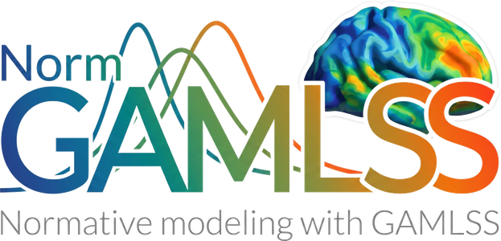

Go beyond the mean. Model the norm.
Full distributional normative modeling — μ, σ, ν, τ as smooth functions of covariates. Built-in site transfer. No retraining required.
Built for multi-site neuroimaging, clinical measurements, and any continuous variable that refuses to behave normally.
Model μ, σ, ν, τ simultaneously — location, scale, skewness, and kurtosis as smooth covariate functions. Not just the mean.
Transfer a trained model to an unseen site using a small calibration sample. A capability unique to NormGAMLSS.
Age-dependent reference bands and individual deviation scores. Publication-quality plots and outlier detection built in.
SHASH, BCT, BCCGo, NO, GA and the full GAMLSS catalogue. Match the distribution to your data.
Proper multi-site modeling with shrinkage. Non-linear trajectories with penalized splines — all native.
Fits into your pandas/numpy pipeline. Save, load, compare models. Parallel processing and caching built in.
A few lines of Python. The full power of GAMLSS underneath — watch it type.
Developed and validated across imaging and non-imaging data by the Laboratory for Mental Health Mapping — MHM-Lab.
PyPI package, full documentation, and preprints — all on the same day.